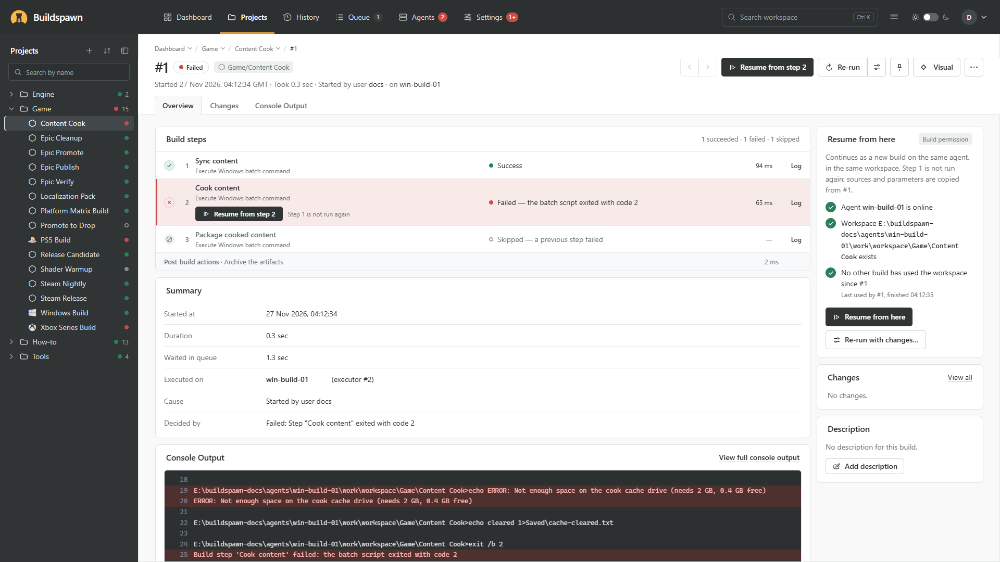
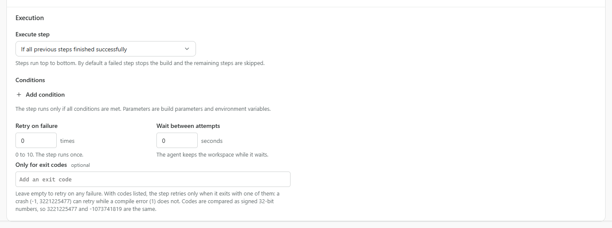

Resume and retry
Pick up a failed build where it stopped, or try a step again. A two-hour cook should not run again because the packaging step failed.
Resume a build
Resume starts a new build that skips the steps that already passed. It runs on the same agent, in the same workspace, and does not fetch the sources again: the revision and the parameters are copied from the failed build.

- Open the failed build.
- Look at the Resume from here card. It checks that:
- the agent is online;
- the workspace still exists;
- no other build has used the workspace since.
- Click Resume from step N in the header, on the failed step, or Resume from here in the card. By default it starts at the failed step; you can start at any earlier step too.
- The new build appears in the queue and runs only the remaining steps.
On the resumed build, the steps that were skipped show as Done earlier, with a link to the build that ran them.
If a check fails, for example because another build used the workspace, Resume is refused. Use Re-run instead: it builds the same sources from the start. See Re-run and Re-run with changes.
Resume needs the Build permission, the same as Re-run. It works for build configurations with build steps. A build with a Parallel block reuses the sides that passed and resumes the side that failed on its own machine.
Retry a step
Some failures are flaky: a network share drops, a device kit times out, a tool crashes. Retry on failure runs a step again before the build gives up.
- Open the step from Settings › Build Steps.
- Scroll to Execution.
- Set Retry on failure to the number of extra tries, from 0 to 10.
- Set Wait between attempts in seconds. The agent keeps the workspace while it waits.
- Optional: list exit codes under Only for exit codes. Then the step retries only for those codes.
- Click Save.

List the codes of a crash, such as -1 or 3221225477, so that a crash retries while a real compile error (exit code 1) fails at once. Codes are compared as signed 32-bit numbers, so 3221225477 and -1073741819 are the same.
When a step runs
The same Execution section sets when a step runs at all, with Execute step:
- If all previous steps finished successfully (the default);
- Only if build status is successful;
- Even if some of the previous steps failed;
- Always, even if build stop command was issued, for clean-up steps;
- Only if build status is failed, for steps that collect crash dumps or send alerts.
Add Conditions to run a step only when a parameter equals, contains or matches a value, for example only when CONFIG equals Shipping.